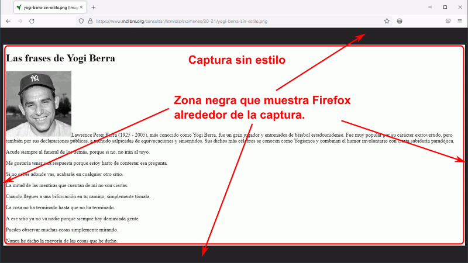
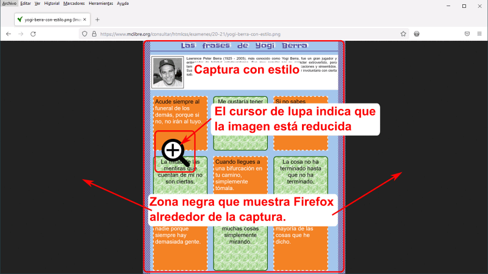
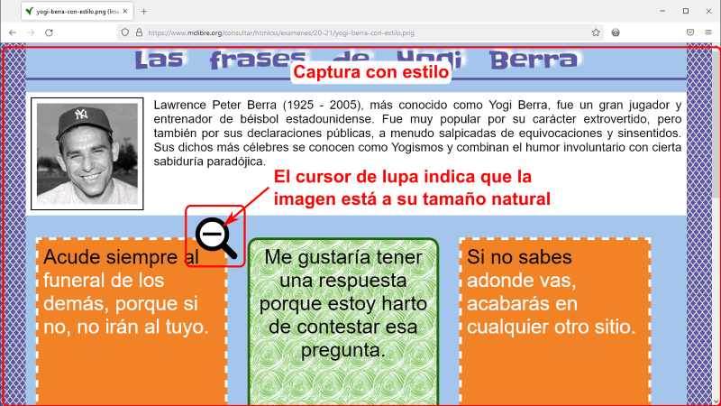

El alumno tendrá a su disposición en el ordenador una copia de los apuntes de clase (aunque no se dispondrá de acceso a Internet).
El alumno podrá traer todo el material que considere necesario en formato papel o electrónico (ejercicios resueltos, apuntes impresos, resúmenes, libros, etc.), pero cada alumno sólo podrá utilizar su propio material (me refiero a que durante el examen no se podrá compartir material con otro alumno que también esté realizando el examen).
En los ordenadores estarán instalados Brackets, Firefox (con Colorzilla instalado), Chrome e Internet Explorer.
El examen consistirá en la realización de dos ejercicios similares a los ejercicios resueltos durante el curso: se proporcionará el texto, las imágenes y las fuentes, así como capturas de pantalla de la página (sin estilo y con estilo) y el alumno deberá crear todas las etiquetas y la hoja de estilo.
Van para el examen todos los temas que se han dado antes del examen (salvo aquellos temas en los que en las explicaciones semanales se indica que no van para examen).
El examen se corregirá comprobando que se han creado las etiquetas necesarias y que se han escrito las propiedades necesarias en la hoja de estilo. Si el resultado es idéntico al enunciado, el apartado se puntuará con la puntuación máxima; si el resultado se consigue parcialmente, el apartado se puntuará parcialmente (75%, 50%, 25%, etc.). Si no se consigue el resultado o se escriben cosas que no eran necesarias, el apartado se puntuará con cero puntos (en ningún caso se descontará nota).
Cuando un resultado se pueda conseguir de varias formas, cualquiera de ellas se puntuará como correcta.
En la captura sin estilo no aparecerán las imágenes insertadas mediante la etiqueta <img>, porque uno de los apartados que se puntuará es precisamente que las etiquetas <img> se inserten en la posición correcta. Dicha posición deberá deducirse de la captura con estilo.
Capturas de imagen
El examen consiste en la realización de una o varias páginas web, similares a las propuestas como ejercicios.
Para realizar el examen se proporciona, como en los ejercicios, un archivo comprimido que incluye el texto, las imágenes y las fuentes necesarias.
La página que debe obtenerse en el examen se proporciona en forma de captura, tanto en la vista sin estilo como con estilo. Esas capturas muestran cómo se ven las páginas en Firefox.
Salvo que se indique lo contrario, la ventana del Firefox en la que se han realizado las capturas tiene un tamaño de 1024px x 768px (ese es el tamaño de la ventana, el espacio que ocupa la página web es algo inferior), pero la captura incluye la página completa. Es decir, el ancho de la captura es un poco menor de 1024px, pero la altura de la captura depende de lo larga que sea la página.
Al hacer clic en los enlaces a las capturas, el navegador muestra la imagen directamente. Si la ventana del navegador es mayor que la captura, en Firefox se ve un marco gris alrededor de la imagen, como se comenta a continuación:
La imagen siguiente muestra cómo se vería en Firefox la captura sin estilo de uno de los exámenes. Como en este caso la ventana en la que se está viendo la captura es mayor que la captura, Firefox muestra la captura a su tamaño real y muestra una zona gris alrededor de la imagen.
Esta captura permite deducir ciertas etiquetas utilizadas en la página.

La imagen siguiente muestra cómo se vería en Firefox la captura con estilo de uno de los exámenes. Como en este caso la ventana en la que se está viendo la captura es menor (en vertical) que la captura, Firefox reduce la imagen para que se vea completa. Como en este caso la ventana en la que se está viendo la captura es mayor (en horizontal) que la captura, Firefox muestra zonas grises a los lados. El cursor es una lupa con un "+".
Esta captura permite deducir ciertas etiquetas utilizadas en la página y las propiedades de estilo utilizadas en la hoja de estilo.

La imagen siguiente muestra cómo se vería en Firefox la captura con estilo de uno de los exámenes, tras hacer clic en la imagen. Firefox amplía la imagen a su tamaño real. Como la ventana en la que se está viendo la captura es mayor (en horizontal) que la captura, Firefox muestra zonas grises a los lados. El cursor es ahora una lupa con un "-".
Esta captura permite deducir ciertas etiquetas utilizadas en la página y las propiedades de estilo utilizadas en la hoja de estilo. Lógicamente, el alumno no debe reproducir las zonas grises en su examen.

En Chrome, las imágenes se muestran a la izquierda (no centradas, como en Firefox) y, si la captura es más pequeña que la ventana, se muestra una zona blanca alrededor de la captura.
Algunos consejos generales
El material que se permite utilizar sólo debería utilizarse para consultas puntuales. Si el alumno necesita consultarlo continuamente, seguramente no tendrá tiempo de completar el examen.
El objetivo del examen es que el alumno demuestre sus conocimientos, es decir, que sabe hacer la mayor cantidad de cosas posibles en el tiempo disponible (que siempre es escaso). Por ello, se recomienda al alumno que empiece haciendo todo lo que sabe hacer en todos los ejercicios y deje para después las partes que le resulten más difíciles.
No es necesario conseguir un resultado idéntico al original para obtener la máxima puntuación en un apartado. Por ejemplo, si el tamaño de una etiqueta es el 300% y el alumno escribe 250%, se considerará correcto, pero si hay dos etiquetas una al 200% y otra al 300% y el alumno escribe 250% en ambas, no se considerará correcto (pero si se consideraría correcto 250% y 350%, por ejemplo).